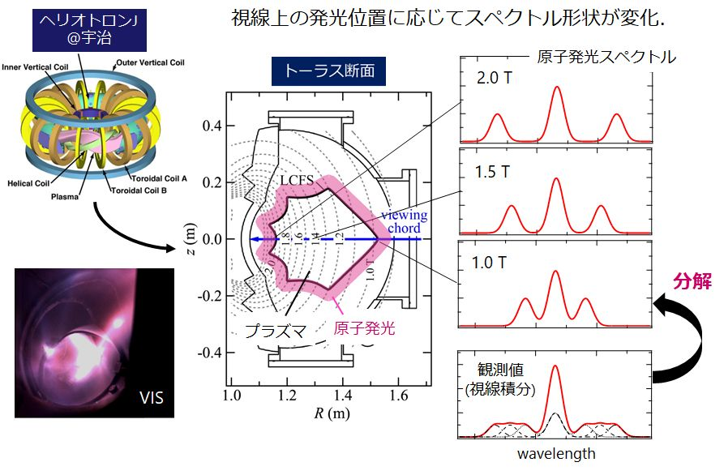

四竈 泰一 (SHIKAMA Taiichi)機械理工学専攻・研究紹介ページ 光工学研究室ホームページ |
|
研究紹介原子分子や固体の発光・吸収スペクトル形状は，温度，圧力，電磁場，密度等の物理環境に応じて変化します．この特性を利用した各種光センサー開発に取り組んでいます．スペクトル形状変化の物理モデリングと光計測の技術開発を並行して進めています．カスプ磁場ECR放電を利用した小型強電離プラズマ源の開発中性粒子密度に対する，イオン・電子密度の割合が数十％に達する強電離プラズマ中では，電場や磁場を用いたイオンの軌道やエネルギーの制御性が向上するため，複雑な形状のワークへの均一な成膜や，薄膜の化学組成・組織配向などの制御が可能となること分かっています．カスプ型の磁場中で生成したECR放電を用いた大容積で高安定な強電離プラズマ生成法の開発と，分光法による性能評価を行っています．"Spectroscopic measurement of the degree of ionization in a helium electron cyclotron resonance discharge in a simple cusp field" (2017) link "Detection of anisotropy in the electron velocity distribution produced by electron cyclotron resonance heating using the polarization of helium atom emission lines" (2018) link "On the spatial uniformity of the degree of ionization in a helium ECR plasma produced under a simple cusp field" (2019) link ・この研究は，競輪，科研費等の補助を受けて実施しています． 核融合プラズマ周辺部の電子温度・密度分布計測法の開発核融合プラズマの周辺部における電子温度・密度の空間分布は，輸送，対向壁熱負荷，燃料供給，不純物遮へいなどを支配するパラメータであることが分かっています．装置構造の制限により，これまで計測が難しかった，周辺全周の電子温度・密度分布を計測可能な分光法を開発しています．

発表論文："Near-infrared Zeeman spectroscopy for the spatially resolved measurement of helium emission spectra in Heliotron J" (2019) link |